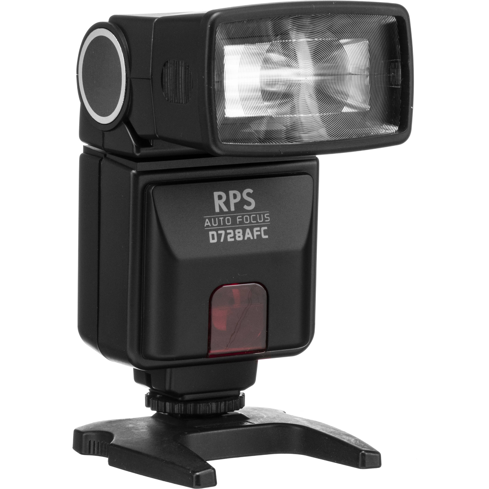

Basic Gears in Photography
Camera Gears
Camera is your best buddy when it comes to photography. It is a device for recording an image of an object on a light-sensitive surface; it is essentially a light-tight box with an aperture to admit light focused onto a sensitized film or plate.
Camera Flash
A camera flash is an indispensible accessory for many photographers; it provides additional light when conditions become too dark to handhold your camera comfortably, allows you to achieve more balanced exposures in daylight conditions, permits freezing of fast-moving subjects and can also be used to control or trigger other flash light sources.
Type of camera flash
Built-in and Pop-up Camera Flash
Built-In & Pop-Up Flashes are flash units constructed within the main camera body. They are on-axis with the lens, so when you fire these flash units, the light fires in one direction only — directly at your subject. This is usually problematic, because the on-axis light causes harsh contrast and hard shadows; not to mention causing the background to be unreasonably dark. We’ve all seen this problem in photos, usually ones that our friends take at night or inside at clubs and parties. You can avoid this unsightly effect by balancing the flash with the ambient light in the scene. You do this by metering the scene – without the flash – and then turning the flash on and taking your photo.

Dedicated Camera Flash
The dedicated flash is a flash unit that fits into your camera’s hot shoe. The dedicated flash is a great piece of gear that communicates with the camera. In combination, the camera and flash use information about lens length, ISO sensitivity, f-stop and shutter speed to determine optimal flash-strength output. The dedicated flash is preferred over the Built-in/Pop-up flash for many reasons, but one of the best is that you can avoid red-eye by angling the flash and bouncing the light onto your subject. In addition, many dedicated flashes pre-flash to get your subject’s pupils to constrict and avoid red-eye. A dedicated flash is a far better tool than the built-in flash because of the versatility it gives you.
Macro Ringlight Camera Flash
A ringlight flash fits on the barrel of the lens by screwing onto the attachment threads. It provides a soft, diffused light source that is ideal for Macro Photography. The fragile parameters of Macro photography preclude using a built-in flash, and a dedicated flash unit doesn’t have the exacting direction capabilities to properly illuminate a Macro subject. The Ringlight Flash enables you to get as close as possible to your close-focus subject and flash it with a light source that will not give you hard contrast or shadows. Instead you’ll get soft, even illumination that will bring out the details.
Hammerhead Camera Flash
A hammerhead flash is a flash unit that is separate from the camera and is not attached to the hot shoe; it screws into your camera’s tripod bushing. The flash unit sits to the side of the camera and it off-axis just enough to limit red-eye in your subjects. It’s a favorite among press and wedding photographers because the hammerhead has a high light output and it provides a better angle and grip than other types of flashes.